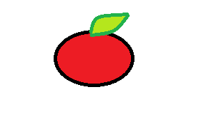
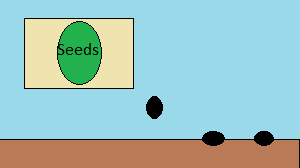

Welcome to the Seeds page, here you will find all the information we have on seeds- what kind of seeds we have, when to plant them, and where to find them in the store.
Because of the fall season, we don't advise planting seeds right now unless you plan on keeping the plants inside.
 We have all kinds of seeds in our center with every kind of vegetable, herb, or flower.